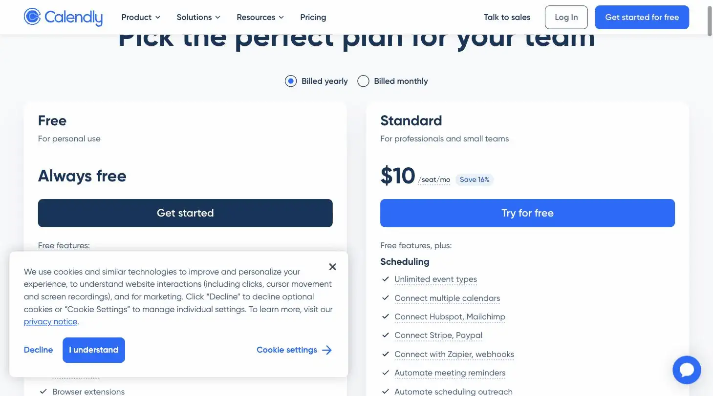

Calendly
Nobody found it glamorous. Nobody had sent a 'does Tuesday work?' scroll in three years either.
Calendly is scheduling software with AI-assisted call routing and no-show reduction, free for basic use and $10/month for Standard. Ranked #7 on Solos Gems (7.3/10) and rated Easiest Start, it's best for solopreneurs booking client calls without email back-and-forth.
Calendly's AI call routing quietly saves you from the does-Tuesday-work email chain of doom. It's somehow still one of the least glamorous great tools on the internet.
- Value for price7/10
- Capability6/10
- Ease of use8.5/10
- Trial safety8/10

Calendly's job is simple: let people book time on your calendar without an email chain. The AI layer sits on top of that core function rather than replacing it. It's there to handle inbound call routing and reduce no-shows, not to reinvent scheduling.
Calendly's booking flow (shown above) handles time zone conversion, buffers, and confirmation automatically, the kind of scheduling logic a shared calendar link or manual back-and-forth email doesn't replicate.
Example from calendly.com. Not independently tested by Solos Gems.Pricing breakdown
- Free: $0; 1 event type, basic scheduling
- Standard: $10/month per seat (billed annually, higher on monthly billing); unlimited event types, Stripe payment collection, multiple calendar connections
- Teams: $16/month per seat; adds team scheduling, round-robin routing, admin features
- Enterprise: custom pricing
What the AI actually adds
Calendly's AI-powered scheduling is aimed at handling inbound phone calls and booking appointments automatically so leads don't fall through when you can't answer live, plus workflow automation for reminders and follow-ups. For a solopreneur, the reminder/workflow automation is the more immediately useful piece, cutting down no-shows without you manually sending a follow-up text.
Pros
- Free plan is genuinely usable for a solo operator with simple booking needs
- Standard's $10/month unlocks Stripe payment collection, useful if you charge for consultations
- Automated reminders reduce no-shows without manual follow-up
Cons
- Free plan's single event type is limiting the moment you offer more than one kind of call
- Per-seat pricing model is built for teams, the value proposition weakens if you're paying for features you won't share with anyone
- AI inbound-call handling is more relevant to sales teams than most solo service businesses
Common questions
Is Calendly's free plan enough for a solo business?
For a surprising amount of solo use, yes. The free plan covers a single event type and basic scheduling, which handles simple book-a-call links fine. The moment you need more than one kind of meeting or to collect payment at booking, you'll want Standard.
Is the $10/month Standard plan worth it?
Usually, once you outgrow the free plan's single-event-type limit. Standard unlocks multiple event types and payment collection at booking, both common needs for a service business taking more than one kind of client call.
Should I care about Calendly's AI features as a solo operator?
Probably not much. The AI inbound-call handling features are aimed at sales teams routing calls across multiple reps, not a one-person operation booking its own meetings, don't let that feature drive the purchase decision.